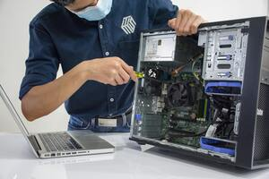

Importância de fazer Manutenção em equipamentos de informática
A manutenção em computadores é de extrema importância, tanto para usuários domésticos quanto para empresas. Ela desempenha um papel fundamental na garantia de que os computadores funcionem de maneira eficiente, confiável e segura.